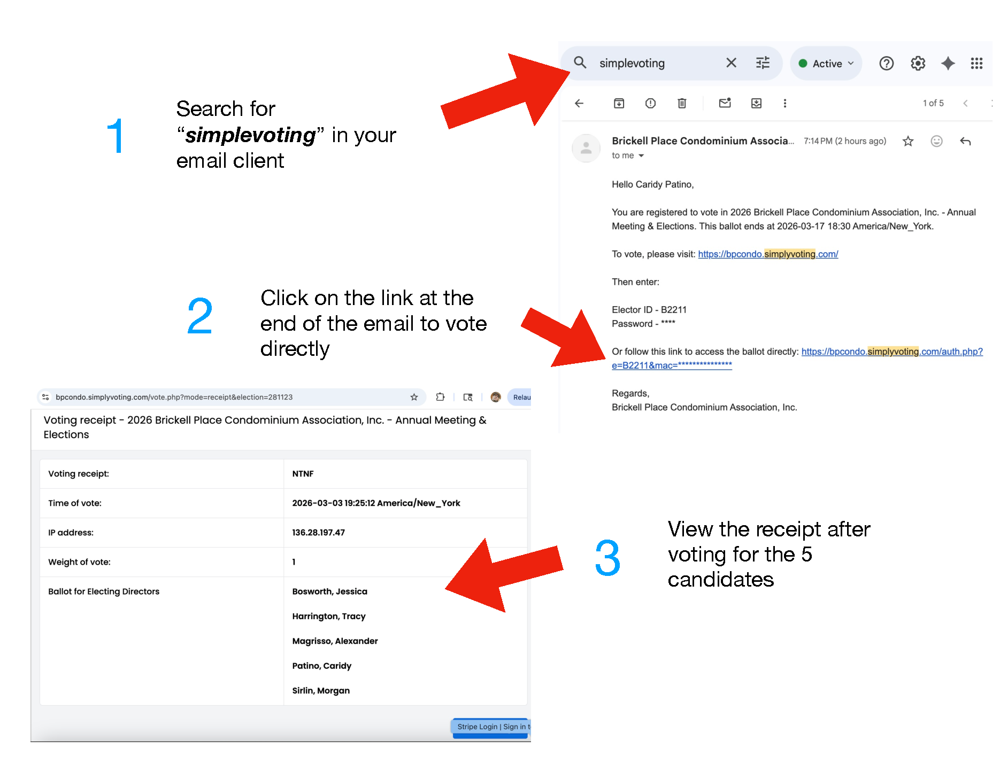

Guía rápida paso a paso para la votación electrónica.
¿No recibió el correo para votar? Usualmente eso significa que su correo no está registrado para votación electrónica. Por favor contacte a la oficina para registrarse y poder votar en línea.
Sugerencia: revise primero su carpeta de spam/correo no deseado. Si aún no aparece, la oficina puede confirmar su estado de registro.
Pasos rápidos:
¿Necesita ayuda para registrarse para votación en línea? Contacte a la oficina:
